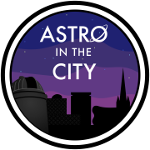

EDDIE ROSS
Portfolio
A gallery of things I've made.
Astronomy in the City
In this project I updated both the programme booklet and the logo for the University of Birmingham Observatory's Astronomy in the City events. Both were tired and outdated, so the ambition was to breathe new life into them.
Learn more about this.PHYART@UoB
I developed the PHYART@UoB website and other media, under tight time restraints, for an outreach project at the University of Birmingham.
Learn more about this.Sun, Stars, and Exoplanets Group
In this project I led a re-branding effort for the Sun, Stars, and Exoplanets group, of the School of Physics and Astronomy, within the University of Birmingham.
Learn more about this.{kind=link}
{kind=link}
UI Design Study: MAPEX Snares
This design study was to done as an exercise in my spare time whilst learning how to use features in Adobe XD. I wanted to experiment with one of my passions, drums, and breathe some new life into what I regard as a rather difficult to navigate website - MAPEX snare drums. I've used a design trend in placing the snare as a large feature one the one side, and the information on the other side. The ambition would be to use the toggle buttons under the title to access other information about the snare drum. This does bring accessibility limitations however, which would need to be carefully considered in the source code.
Three pages have been mocked up to show how the design could vary for different snare drums. The arrows in the bottom right corner would be used to see different photos of the snare. The page has a cleaner feel, and I believe that the use of colour in this study has a stronger connection to the MAPEX brand and individual snare drum identity than the existing MAPEX snare drums store pages.


Harico - Curl (Lyric Video)
This video was made alongside the release of the single 'Curl' on all music streaming platforms to accompany the song. I really like the bit at ~2 minutes, when the middle graphic spins and the words in-spiral.
Small Talk - October (Lyric Video)
This video was made alongside the release of the single 'October' for the band Small Talk. It was created using various stock videos of NASA Apollo and Shuttle missions to fit with the themes of the band's other design assets. Edited using Apple's Final Cut Pro.